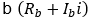
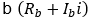
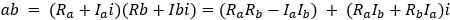

Programming ARC DSP Using FXAPI¶
Part 1. Prerequisites¶
Before starting using ARC DSP the following prerequisites are required:
Have MetaWare tools for Windows installed
Known how to create, edit, build and debug projects in MetaWare IDE
Have ARC IOT Design Kit (IOTDK) board and Digilent USB drivers (Digilent Adept 2) installed and tested
IOTDK board is based on DSP-enabled core configurationEM9D
The following needs to be tested before starting this lab:
- Connecting IOTDK board to computer
- Connecting serial console (PuTTY) to IOTDK COM port (For information on how to do initial board setup and configuration please refer to Getting Started chapter of ARC IOT Design Kit User Guide that came along with IOTDK board).
Part 2. Lab Objectives¶
Use FXAPI and compare program run speed with and without FXAPI, i.e. DSP extension usage.
Part 3. Lab principle and method¶
This lab uses complex number multiplication as an example where using just compiler optimization options cannot gain the same effect as calling DSP instructions manually through FXAPI.
In this lab two implementations of complex multiplication are shown with and without FXAPI.
Complex number multiplication¶
Multiplication of two complex numbers
 and

and

Is done using formula:

In this lab example multiplication and accumulation of two arrays of complex numbers will be used as a way to compare performance of ARC DSP extensions when used effectively.
The sum of element wise products of two arrays of complex numbers is calculated according to the following formula:

where a and b are arrays of N complex numbers.
Implementation without DSP¶
In order to calculate element wise products of two arrays of complex numbers a struct cat be defined that stores real and imaginary parts of the complex number, thus the calculation process receives an array of structures and works on it. The code is shown below:
typedef struct { short real; short imag; } complex_short;
complex_short short_complex_array_mult (complex_short *a, complex_short *b, int size) {
complex_short result = {0,0};
int acci=0;
int accr=0;
for (int i=0; i < size; i++) {
accr += (int) ( a[i].real * b[i].real );
accr -= (int) ( a[i].imag * b[i].imag );
acci += (int) ( a[i].real * b[i].imag );
acci += (int) ( a[i].imag * b[i].real );
}
result.real = (short) accr;
result.imag = (short) acci;
return result;
}
The example keep real and imaginary values in variables of type “short”, while multiplication results are kept in “int” integer to avoid truncation. Final result is casted to short to return complex number as a result.
Implementation with FXAPI¶
FXAPI makes it possible to directly access complex number instructions (like MAC) available in ARC DSP Extensions. This is done through complex number type cq15_t, and various fx_* functions. Here fx_v2a40_cmac_cq15 FXAPI function is called which performs MAC of two cq15_t complex numbers.
cq15_t fx_complex_array_mult(cq15_t *a, cq15_t *b, int size) {
v2accum40_t acc = { 0, 0 };
for (int i=0; i < size; i++) {
acc = fx_v2a40_cmac_cq15(acc, *a++, *b++);
}
return fx_cq15_cast_v2a40( acc );
}
As with previous implementation q15_t is of similar size as short type thus multiplication result needs larger storage. Here 40b vector accumulator is used directly to store intermediate results of MAC, and is casted to cq15_t on return.
Using IOTDK board for performance comparison¶
To compare performance of these two functions a simple ESMK application is created that performance complex array multiplication using either of the implementations above. The program initializes two arrays of complex numbers with random values and calls functions above in a loop (1 000 000-10 000 000 times) to make calculation delay measurable in seconds, this is done 8 times, and after each loop a LED on board is turn on. In the result LED strip on board works as a “progress bar” showing the process of looped multiplicaitons.
The main performance check loop is shown below, the outer loop runs 8 times (number of LEDs on LED strip) the inner loop makes “LOOPS/8” calls to complex multiplication function, LOOPS variable is configurable to change the total delay. The example below uses DSP types, and can be changed to use short-based struct type.
#include "fxarc.h"
#define LOOPS 10000000
int main(int argc, char *argv[]) {
unsigned int led_status = 0x40 ;
DWCREG_PTR pctr =
(DWCREG_PTR) (DWC_GPIO_0 | PERIPHERAL_BASE);
DWCREG_PTR uart =
(DWCREG_PTR) (DWC_UART_CONSOLE | PERIPHERAL_BASE);
gpio_init(pctr);
uart_initDevice(uart, UART_CFG_BAUDRATE_115200,
UART_CFG_DATA_8BITS,
UART_CFG_1STOP, UART_CFG_PARITY_NONE);
cq15_t cq15_a[20] = {{0x2000,10},{0x100,20},{4,30}};
cq15_t cq15_b[20] = {{0x2000,11},{0x100,21},{5,31}};
cq15_t res;
uart_print(uart, "*** Start ***\n\r");
led_status = 0x7F;
for (int i =0; i< 8; i++) {
gpio_set_leds(pctr, led_status);
for (int j = 1; j < LOOPS/8; j++ ) {
res = fx_complex_array_mult(cq15_a, cq15_b, 2);
};
led_status = led_status >> 1;
}
gpio_set_leds(pctr, 0x01ff);
uart_print(uart, "*** End ***\n\r");
return 0;
}
Part 4. Test¶
To test the example below some modification of the code will be required to make have two loops with and without DSP. First you must re-build libraries for this particular configuration of IOTDK:
buildlib my_dsp -tcf=<IOTDK tcf file> -bd . -f
IOTDK tcf file can be found in https://github.com/foss-for-synopsys-dwc-arc-processors/embarc_osp/tree/feature/iotdk/board/iotdk/configs/10/tcf/arcem9d.tcf
Both examples are to be compiled with DSP extensions, with the following options set:
gmake BOARD=iotdk BD_VER=10 CUR_CORE=arcem9d TOOLCHAIN=mw gui ADT_COPT="-Hdsplib -Xdsp2 -tcf=./arcem9d.tcf -Xdsp_complex" ADT_LOPT="-Hdsplib -Xdsp2 -tcf=./arcem9d.tcf -Hlib=./my_dsp"
With high optimization level set high function using “short” type is compiled to us DSP MAC operation, enabling significant speedup.

However, using FXAPI enables compiler to directly use complex MAC instruction “cmachfr”.